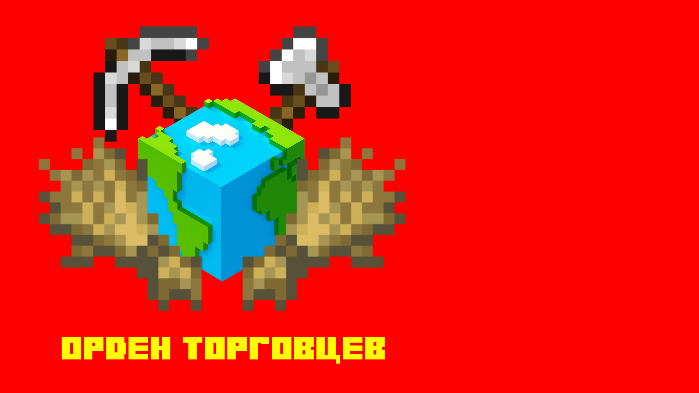
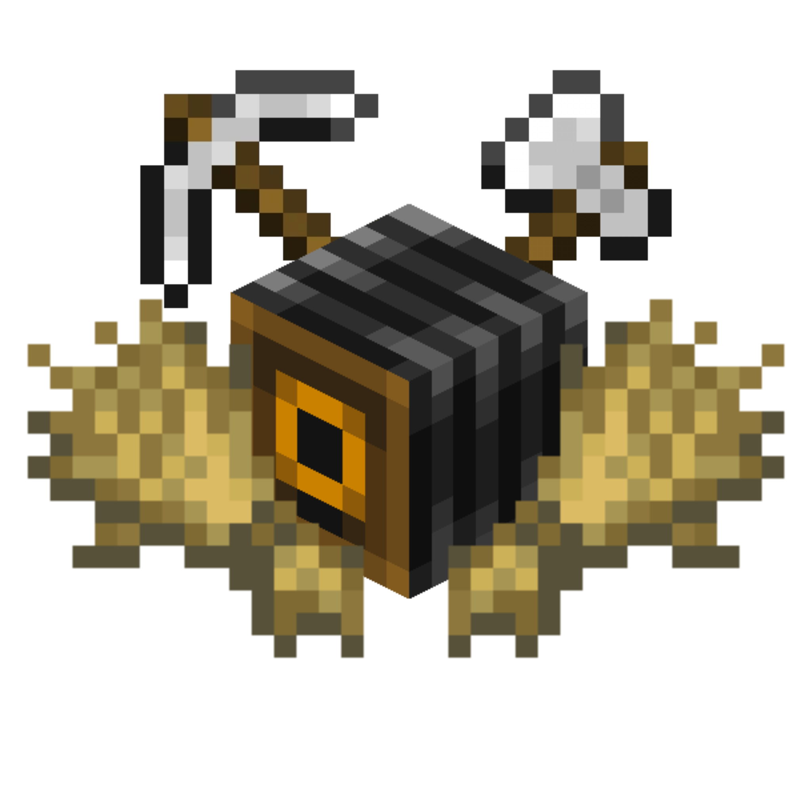

Министерство культуры Ордена Торговцев
Министерство культуры Ордена Торговцев (Минкультуры Ордена) – орган исполнительной власти, осуществляющий функции по нормативно-правовому регулированию в сфере культуры, искусства, культурного наследия (в том числе археологического наследия) и кинематографии, а также по охране культурного наследия.
Министерство культуры Ордена Торговцев

Страна:
 Орден Торговцев
Юрисдикция:
Дата создания:
4 января 2026 года
Подчинено:
Министр:
История
29 декабря 2025 года Ананас создаёт "Орден Вики"  .
.
4 января 2026 года Ананас придумывает "Орденовское историко-культурное общество" .
.16 января 2026 года Ананас создаёт "Orden Films" .
1 февраля 2026 года Ананас берёт концепцию "Орденовского историко-культурного общества" и создаёт "Минкультуры Ордена" .
.Руководство
Пока что всё держится на Ананасе 🙏
Подведомственные органы
Ведомственные награды
Награждение ведомственными наградами Министерства культуры Российской Федерации происходит за особые достижения (заслуги) в сфере культуры, искусства, истории, кинематографии и так далее.
Список наград:
• Респект от Шкафа
• Респект от Ананаса